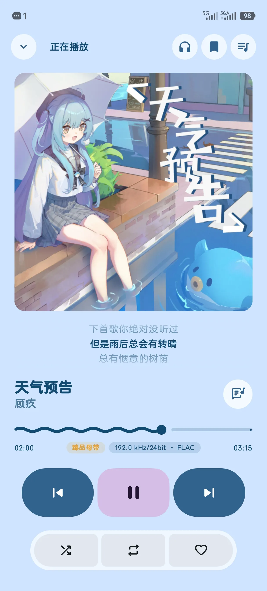
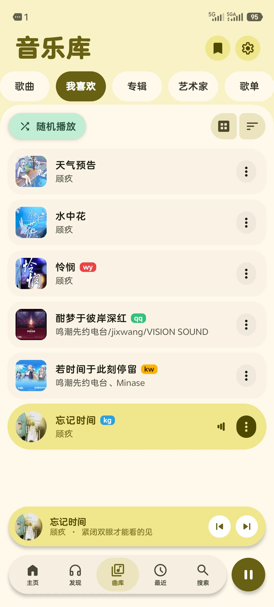
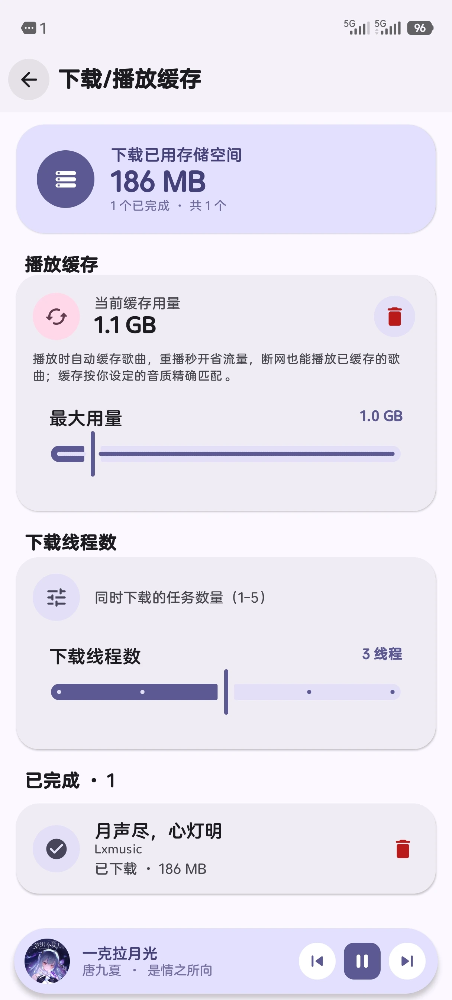
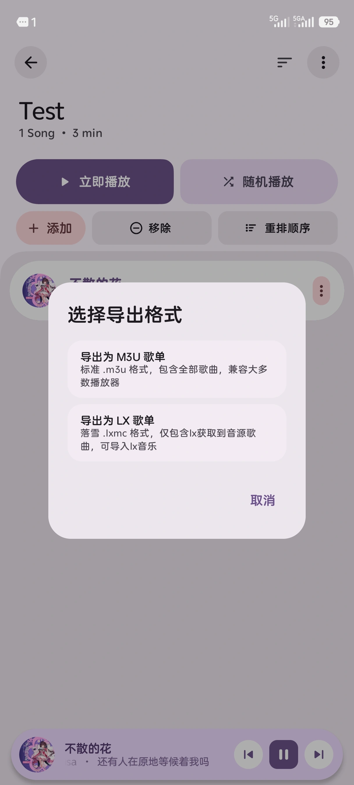

PixelPlayerOLX
一款支持Lx多源聚合的安卓音乐播放器
扫描并整理你设备上的音乐，串流你在线媒体库，可选接入兼容 lx-music 的在线音源。支持母带、全景声、24bit FLAC 等内容。


一切围绕你的音乐
本地播放、自托管与离线使用默认可用；在线能力完全可选、由你掌控。
本地媒体库
扫描 MP3、FLAC、AAC、OGG、WAV、M4A，按专辑、艺术家、流派、文件夹整理，支持歌单、收藏与统计。
自托管串流
部分平台的登录，同步、串流并离线下载你的音乐库。
高音质播放
Media3 播放引擎与 FFmpeg 解码，无缝播放、淡入淡出，在线音源最高到母带与全景声。
歌词全覆盖
内嵌歌词、本地 .lrc、导入编辑，可选 LRCLIB与各大平台的歌词联网补全，支持逐字歌词显示。
Lx 音源
沙箱化 QuickJS 引擎运行兼容 lx-music 的音源脚本，多脚本择优、自动降档回退，导入前默认关闭。
歌单互通
导入 / 导出 .lxmc 歌单，可与 lx-music-mobile 互通；偏好、歌单、歌词与统计等可完整备份恢复。
应用界面
Jetpack Compose · Material 3 · 动态取色 · 深浅主题


获取应用
版本发布在 GitHub Releases，选择适合你设备的 APK：
本软件不托管、不存储、不拥有任何受版权保护的音频内容；在线功能仅在导入并启用音源脚本后生效，且仅供个人使用。